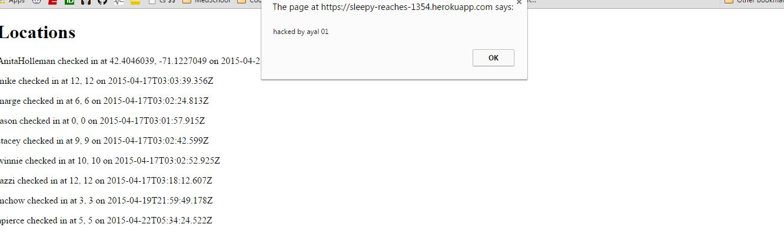
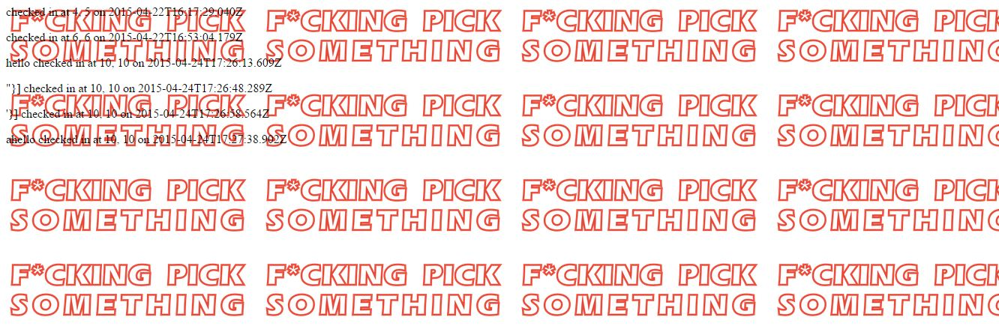

Introduction
Pierce Security Solutions (PSS) was hired by Mr. Norman Young to document and
resolve security and privacy issues in his application. According to his
client (a Professor Ming Chow), Mr. Young's Marauder's Map is,
"a magical document that reveales all of Hogwarts School of Witchraft
and Wzardry... and the location of every person in the grounds, portrayed
by a dot."
Mr. Youngs product is both the client-side map that sends its location,
receives other locations, and displays them all on a server. And the
server itself (i.e. POST/GET APIs).
PSS found numerous vulnerabilities in Mr. Young's application documented below
Methodology
- Black Box: Testing was first carried out using
"Black-Box" methodology, or what an attacker would be able to
attack without seeing the source code. The actual heroku
application was attacked with incrementing damage so as to be
able to discover further vulnerabilities. The Google Chrome
POSTMAN extension and Mozilla Firefox TamperData extension
were used as well. Almost all the vulnerabilites were found
in the Black-Box stage.
- White-Box: Mr. Young's provided code was then
reviewed to find unideal coding practices, server-side
exploitations should an attacker gain access, and possible areas
for vulnerability resolution.
Abstract of Findings
The most glaring security issues came from Mr. Young trusting user input. As Professor Ming Chow at Tufts University states, "Never Trust User Input."
Mr. Young enables CORS and never sanitizes or limits user input so a user
can send large scripts and execute MongoDB database queries. Mr. Young does
prevent the vulnerability of submitting malicious data via the latitude and
longitude parameters since they are expecting floats.
However, the login parameter remains extremely vulnerable.
Issues Found
- Cross Site Scripting - General
- Location: Injected via POST API in the "login" parameter" and executed when client loads via GET API
- High Severity:
With this XSS vulnerability, any amount of malicious code
can be executed on the client side from a window relocation to a fake,
site, to cookie stealing.
- Description:
Found using the Google Chrome POSTMAN extentsion and
testing with
<script>alert("Hacked by ayal 01")</script>
- 
- Resolution: This issue can be resolved by escaping
characters to their HTML encoding when it is stored in the database.
For an example, see Ming Chow's HtmlEncode()
Here
- Cross Site Scripting - DB Injection Local Effects
- Location: Injected via POST API in the "login" parameter" and executed when client loads via GET API
- Medium-High Severity:
With this XSS vulnerability, the client will not be able to access the database on the home page. Luckily, this attack did not affect the actual database. However, an attacker with more experience might have been able to wipe out the database
- Description:
Found using the Google Chrome POSTMAN extentsion and
testing with
<script>db.collection(locations, function(e,c){ collection.remove())};</script>
- 
- Resolution: This issue can be resolved by escaping
characters to their HTML encoding when it is stored in the database.
For an example, see Ming Chow's HtmlEncode()
Here
- Location Spoofing - No User Authetication
- Location: /sendLocation POST API
- Severity: Medium: An attacker can either spoof his location or falsify a different client's location if s/he knows that client's login. This attack does not do anything malicious, per se but the severity increases depending on how accurate the map needs to be. For example, if Hogwarts' Professors are tracking their students' location. Harry can say he is in his
dorm and make Malfoy be in the Forbidden Forrest. Or, if the NSA is tracking
Ming Chow, they now think he checked in in Syria
- Description: This was found by simply sending false information with my login and a different GPS coordinate.
For example, I was able to say mchow was in Syria! This could also have been done with a Man-In-The-Middle attack using TamperData to change your geolocation before it got sent to the server
- Resolution: Having some type of user authentication before having the ability to check in information
Conclusion
Overall, Pierce Security Solutions does not recommend deploying this app for public use since it is has security vulnerabilites, such as XSS, that can be dangerous for any client who accessses the data. Furthermore, due to a lack of user authentication, the data provided by Mr. Young's server cannot be trusted as accurate. Fortunately, the XSS vulnerability is easy to solve with escaping characters but the user authetication might take some more ingenuity. For $50/hour, Pierce Security Solutions will fix these glaring vulnerabilities and prepare the server for deployment